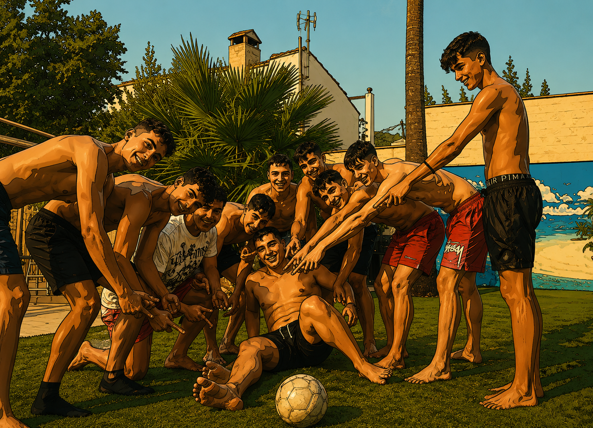
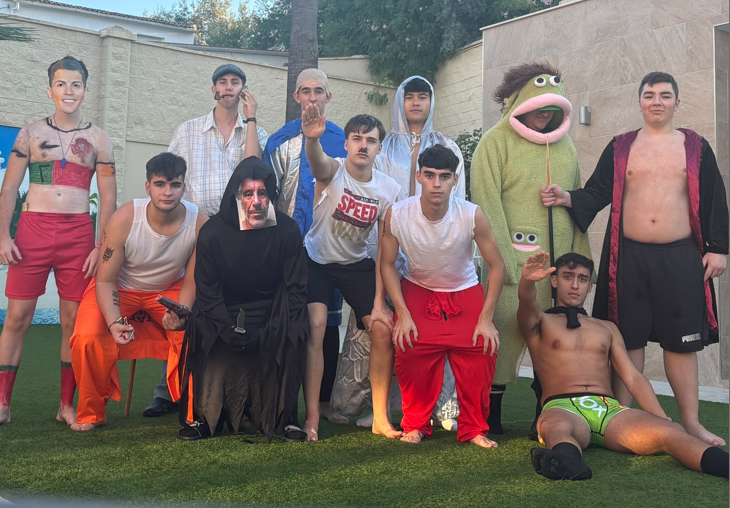
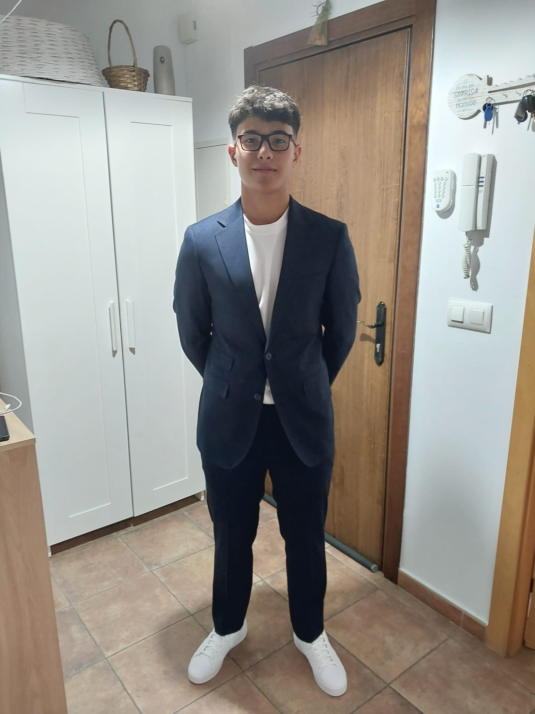
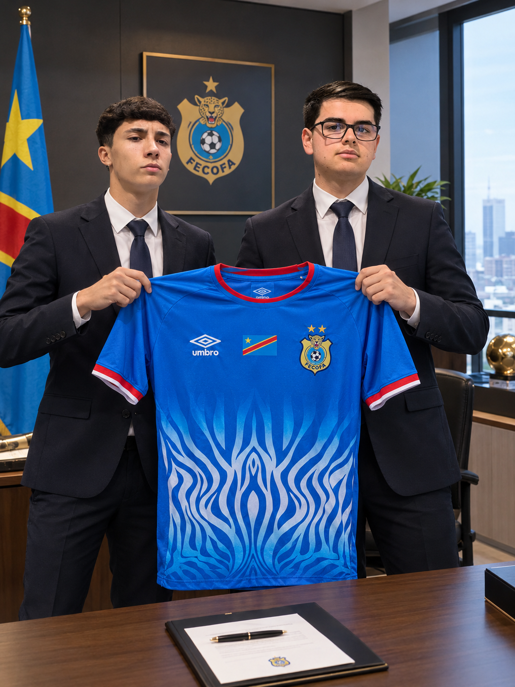
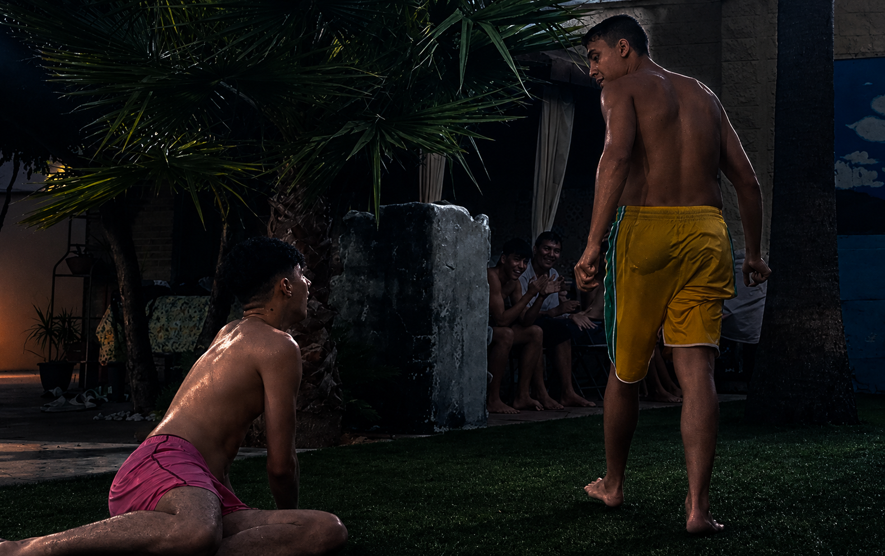
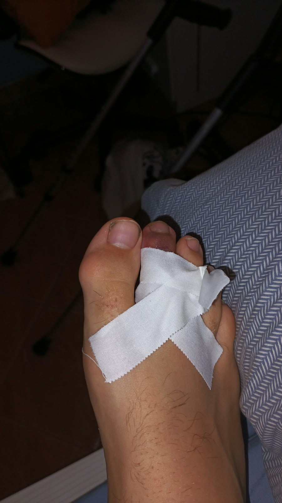
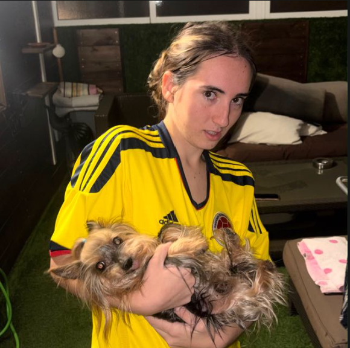
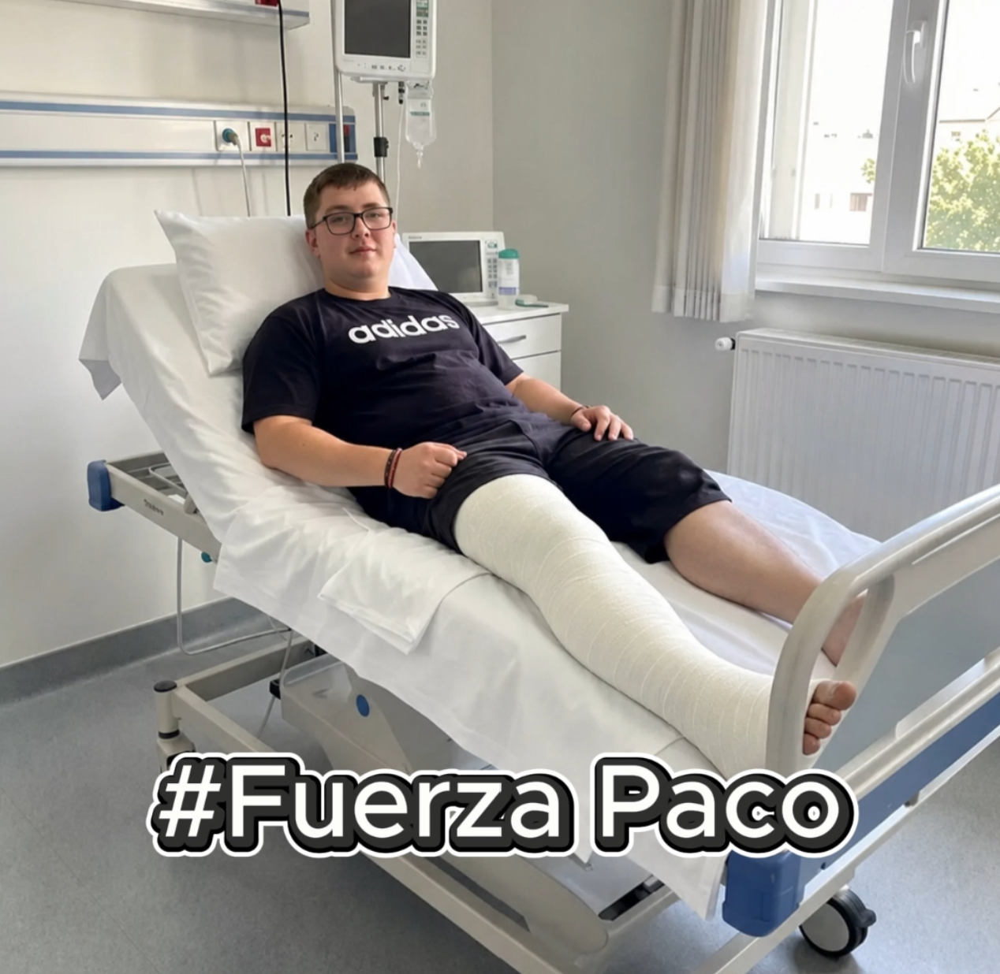
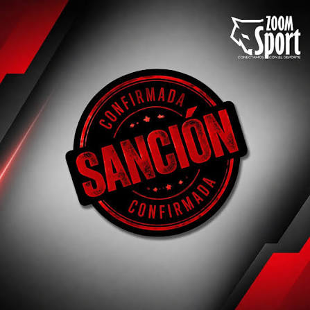
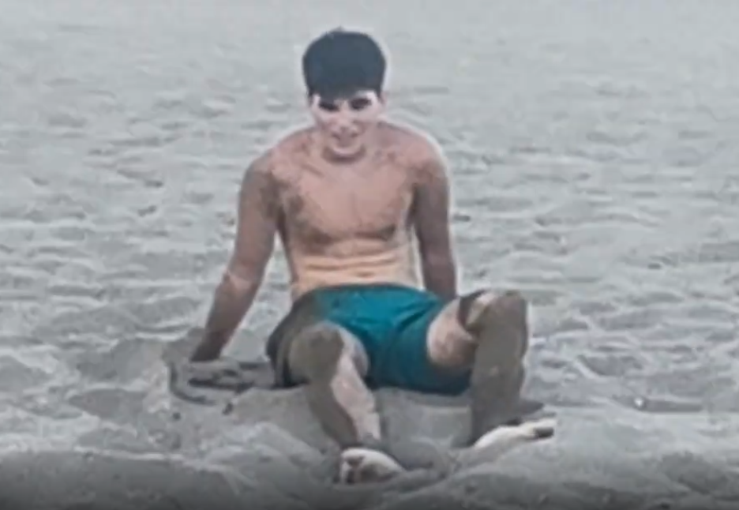

La liguilla entre amigos que se juega en el barro y se gana en el vídeo. Cada jornada grabamos el partido, sacamos los mejores goles, regates y patadas, y coronamos a un MVP. 15 jornadas hacen una temporada, y quien más MVPs sume se lleva el Balón de Oro.
Lo último de la liga: MVPs, previas de jornada y los highlights recién subidos.

Tras una acción de remate, nuestro compañero y jugador Paco sufrió una contusión en su dedo del pie del cual se lesionó de gravedad, los médicos se esperaban una recaída pero gracias a dios no fue nada y se quedó solo en un susto.

Después de tantas jornadas de risas, goles, patadas, robos y lloros, hemos dado por concluida esta gran temporada, con muchos recuerdos y alegrías. Tebas da las gracias del primero al último, incluidos los que ya no están, por hacer esto posible. Nos vemos en la gala de los carniceros. #Gala2026

Con la jornada 15 ya decidida, Montesinos cierra la Temporada 1 como líder con 4 MVP y se corona campeón. Pablo Brenes, Fran, Juan Carlos y Jorge terminan empatados a 3. Arranca la cuenta atrás para la Temporada 2.

El presidente de la liga, Juan Javier Tebas, anuncia el fichaje del canterano Ismael Estévez Peña, que ya jugó varias jornadas con el primer equipo. Tebas le ha hecho ficha oficial, así que a partir de la jornada 13 podrá competir al cien por cien. #IsmaYaEstáAquí

Tras los acontecimientos ocurridos en la jornada 11, debido a un cúmulo de patadas y polémicos criterios arbitrales, nuestro jugador y compañero Pablo Brenes denunció a la liga y abandonó la misma durante un corto periodo de tiempo. Por suerte, todo se ha solucionado y va a seguir con nosotros.

Nuestro compañero Pablo Orejuelas ha sufrido una fractura grave en el dedo del pie al intentar "pinchar" una pesa, acabando en urgencias. Menos mal que solo fue el dedo y no le dio por rematarla de cabeza. Podría perderse lo que resta de la temporada.

El Forge FC acaba de cerrar el trato con nuestra jugadora y compañera Helena procedente de la Champiñón League, en calidad de cesión de 1 año sin opción de compra. Se incorporará a las filas del equipo canadiense en este mercado de invierno, haciendo que su última jornada sea la próxima jornada 9.

Tras los reconocimientos médicos por su fractura en el dedo del pie, Paco ha estado 2 jornadas de baja y sufrió una recaída que le costó otra jornada más. Los médicos estiman que su lesión estará superada y podrá volver a jugar en la jornada 8.

Tras el incidente ocurrido con el jugador Alvaro Marín, toda la junta directiva de la champiñon league ha decidido imponer un sanción de 3 jornadas en consecuencia a su enfado y más motivos por el cuál no podrá participar hasta la jornada 10, dejandolo asi casi definitivamente fuera del balón de oro.

Tras su lesión en la jornada 5 hecha por el carnicero de Pablo Orejuelas, los médicos han dictaminado una jornada más de lesión debido a el miedo a una posible recaída, convirtiéndose así en su 3º jornada de ausencia.
Revisa los highlights de cada jornada y descubre quién va camino del Balón de Oro de esta temporada.
Ver highlights de jornadas